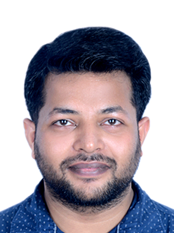

Bridging geospatial intelligence and environmental science to address climate change, groundwater vulnerability, and land-use futures. Published researcher with expertise in ArcGIS, Google Earth Engine, SWAT, and hydrological modelling.

I'm a postdoctoral researcher at Trinity College Dublin, currently assessing groundwater recharge vulnerability to climate change in Ireland. My work sits at the intersection of geospatial analysis, hydrological modelling, and evidence-based environmental policy.
My PhD from IIT (ISM) Dhanbad focused on building a geospatial framework for predicting future land-use patterns and allocating environmental facilities — a project that contributed directly to the Dhanbad Master Plan 2030.
Before academia, I worked as a Junior Research Fellow at DRDO (DTRL), developing hyperspectral spectral libraries for defence-related terrain identification, sharpening my remote sensing skills in the field.
Assessing groundwater recharge vulnerability to climate change in Ireland. Conducting hydrological and geospatial modelling, climate data analysis, and spatial mapping. Developing decision-support frameworks integrating GIS and remote sensing tools for evidence-based water resource management.
Co-developed the Dhanbad Master Plan 2030, identifying optimal locations for sustainable infrastructure including green zones and biodiversity-protected areas. Built a GIS-based Markov Chain and neural network model for urban development forecasting using Python, ArcGIS, QGIS, and Google Earth Engine.
Developed a comprehensive manual for the Geoinformatics Laboratory Course, enabling students to learn GIS tools in a structured, practical environment.
Created spectral libraries using reflective and emissive spectra for delineating terrain features in the hyperspectral domain. Identified spectral signature differences due to varying soil moisture using MATLAB; built spectral libraries from Udaipur and Almora Districts.
Monitoring, operations, and handling of Zero Liquid Discharge plant.
Open to research collaborations, consultancy, and policy-support engagements in environmental and water resource management.